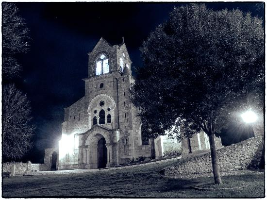

Los Desafíos de la Iglesia en el Siglo XXI
La iglesia ha sido una parte fundamental de la vida de las personas durante siglos. Sin embargo, en el siglo XXI, se enfrenta a una serie de desafíos únicos que requieren adaptación y reflexión. A medida que el mundo evoluciona, la iglesia debe abordar estos desafíos para seguir siendo relevante y cumplir su misión espiritual.
Cambios Culturales y Sociales
La sociedad ha experimentado cambios culturales y sociales significativos en el siglo XXI. La secularización, el individualismo y la diversidad religiosa son desafíos que la iglesia debe abordar. Adaptarse a una sociedad cada vez más pluralista y multicultural es un desafío crucial.
Tecnología y Comunicación
La tecnología ha transformado la forma en que las personas se comunican y acceden a la información. La iglesia debe aprovechar las herramientas tecnológicas para llegar a nuevas generaciones y difundir su mensaje de manera efectiva a través de medios digitales y redes sociales.
Participación y Compromiso
Muchos jóvenes en el siglo XXI muestran una menor participación y compromiso religioso. La iglesia debe encontrar formas de atraer a las generaciones más jóvenes, proporcionando un espacio acogedor y relevante para sus necesidades espirituales y sociales.
Cambio en las Dinámicas Familiares
Las dinámicas familiares han evolucionado, con estructuras familiares más diversas y cambios en las roles de género. La iglesia debe ser inclusiva y comprensiva de estas realidades y proporcionar apoyo a las diferentes configuraciones familiares.
Justicia Social y Compromiso Cívico
El siglo XXI ha visto un aumento en el activismo y la conciencia social. La iglesia debe comprometerse activamente en temas de justicia social, promoviendo valores de amor, compasión y equidad en la sociedad.
Cambios Demográficos
Los cambios demográficos, como el envejecimiento de la población, presentan desafíos para la iglesia en términos de cuidado pastoral y relevancia para diferentes grupos de edad.
En conclusión, la iglesia en el siglo XXI se enfrenta a una serie de desafíos complejos que requieren adaptación y renovación. Al abordar estos desafíos con comprensión y apertura, la iglesia puede continuar cumpliendo su misión espiritual de amor, servicio y guía en un mundo en constante cambio.
